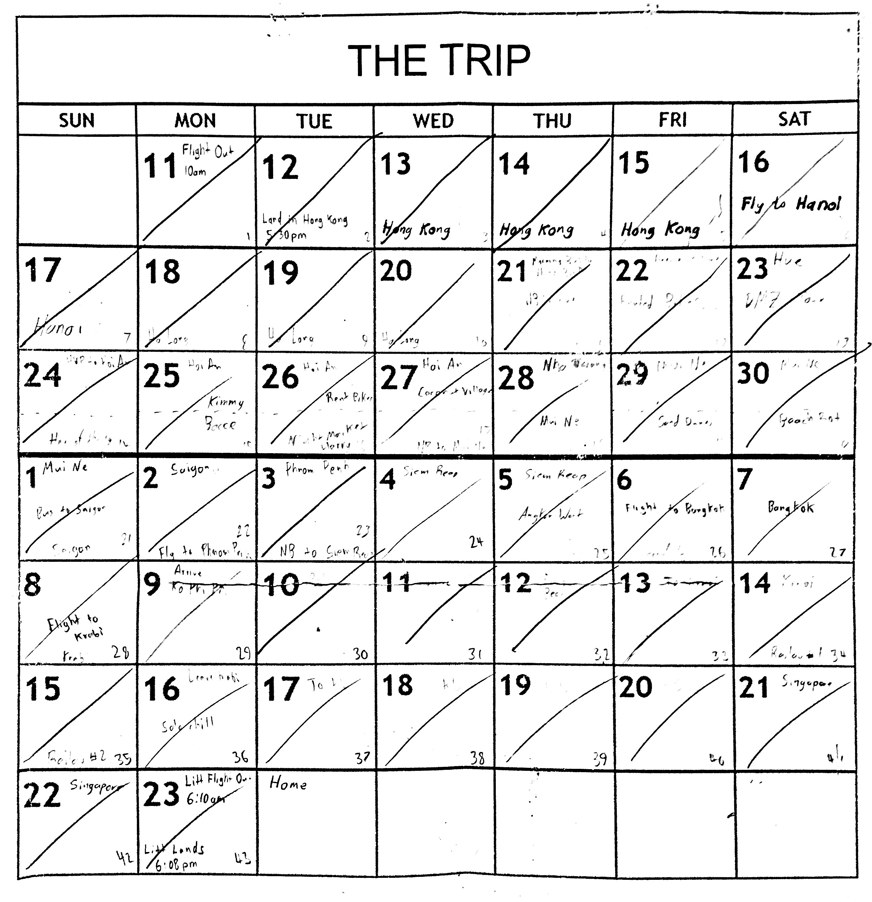

SE Asia Trip, Part 1: Vietnam
2018-12-28

Preface
In summer of 2018, I got the chance to do a bit of travelling - first to Europe in May, and Southeast Asia from mid-June to late July. It was sweet, so I’m writing it down.
While my trip started in Hong Kong and ended in Singapore, I’m going to start with Vietnam as a whole. Vietnam was overwhelmingly my favourite part of the journey. You’ll often hear the maxim of ‘vacation vs travel’. If you’re a traveler, Vietnam has much to offer.
Hoping this stirs my nostalgia and helps some friends unto the breach. Bess, Tim, El, this is for you dingos too.
Hanoi
Stayed: Signature Inn (Chill), Vietnam Backpackers Downtown (Party)
Ate: Bahn Mi 21, Bun Cha Huong Lien (Obama & Bourdain ate here!)
Did: HCM Mausoleum, Hilton Hanoi, Temple of the Jade Mountain, Temple of Literature
Hanoi is Vietnam at its most unfiltered. Travellers typically stick to the Old Quarter around Hoàn Kiếm Lake, with its bustling narrow streets equally shared between scooter, pedestrian and car. The name of the game for Hanoi is to wander & chill - meet come cool people in your hostel, then go drift between imperial temples and markets of knockoff Supreme.
If you’re heading to Sa Pa or Ha Long Bay, Hanoi’s a good base to work out of. Beware though, there are plenty of tour companies that are shitty or scams. I would make sure to book tours & trips through your hostel, or a source that has plenty of good reviews online.